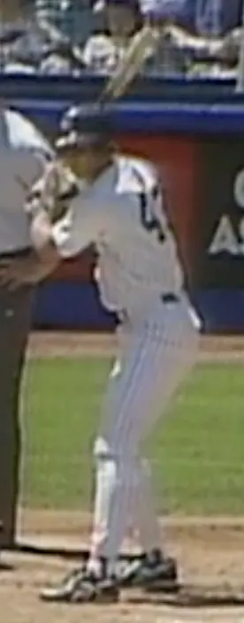

Bob Melvin "BoMel"
Career Highlights & Facts
(Facts are AI-generated and may require verification)
- Earned multiple Manager of the Year awards in both major leagues.
- Played as a catcher for 10 seasons before transitioning into a highly successful managerial career.
- Once collected 350 pounds of yams as a reward for hitting 7 home runs during an amateur tournament.
Would you like to find out more about Bob Melvin?
Player Biography
Bob Melvin December 8, 2022 / in BioProject - Person Managers / by admin This article was written by Malcolm Allen When Bob Melvin was a 27-year-old big-leaguer, journalist Bill Glauber described him as “the strong, silent type, with gnarled hands and a no-nonsense manner that commands respect. He is part psychologist, and part intimidator. A good cop. And a bad cop. He is, of course, a catcher.” 1 Following a playing career that spanned 10 seasons (1985-1994) with seven major-league teams, the respect that Melvin commanded behind the plate helped him establish himself as one of the best skippers of his era, earning Manager of the Year Awards in both the American and National Leagues. When he left the Athletics to lead the Padres after the 2021 season, Melvin had managed more games than anyone during the club’s first 54 years in Oakland and trailed only Hall of Famer Connie Mack in franchise history. 2 Robert Paul Melvin was born on October 28, 1961, in Palo Alto, California. He was the second of two children born to Paul and Judy (Levitas) Melvin, following daughter Kathy. Paul, an accountant for Julliard & Co., was Catholic, while Judy was Jewish. 3 Bob grew up in Menlo Park, about 30 miles south of San Francisco. He frequently attended Giants’ games at Candlestick Park with his maternal grandfather, R.B. “Bud” Levitas, who had been the original ball boy for the Wisconsin-based Acme Packers – the team that later became the Green Bay Packers of the National Football League. Levitas was a close friend of future Pro Football Hall of Famer Vince Lombardi. Bob turned nine shortly after Lombardi died, but he had played catch with him and attended practices during the legendary coach’s final season. 4 Mike McCormick , the 1967 National League Cy Young Award winner, was another family friend. “I was around a lot of people in professional sports who I could look up to, and kind of aspire to going in that direction,” Melvin said. 5 After his parents divorced in 1972, Melvin was raised by his mother. The following year’s city directory listed her as a secretary for the Bay Area Trucking Company. In 2003, she described how Orlando Cepeda had given her the last official baseball hit at the Giants’ original home in San Francisco, Seals Stadium, as a gift. The treasured keepsake remained on a stand until Bob took it for a sandlot game and lost it. “He just lived baseball,” she recalled. 6 In the majors, Melvin was listed at 6-foot-4, 205 pounds. When he was young, his size caused him to stand out, as did his confidence in interactions with adults. “I think Bob could have been voted mayor of Menlo Park when he was 10,” remarked childhood friend Jim Morris. 7 Melvin attended Menlo-Atherton High School. The institution’s alumni included Rock ‘n’ Roll stars Lindsey Buckingham and Stevie Nicks of Fleetwood Mac, and the Grateful Dead’s Bob Weir. 8 A few weeks before his 15th birthday, Melvin attended a Day on the Green concert at the Oakland-Alameda County Coliseum that featured the Grateful Dead and The Who. “ The Who never encored and they encored that day – ‘Johnny B. Goode,’” he recalled. “When they left, I remember them standing up in the right-field bleachers looking down at the crowd.” 9 Melvin batted .474 as a three-year starter for the Menlo-Atherton Bears baseball squad. 10 He also lettered in basketball and golf. 11 When the school started an Athletic Hall of Fame in 1994, he was part of the first induction class. 12 After reaching the majors, Melvin named former Cincinnati Reds catcher Johnny Bench as his childhood baseball idol but said golfer Seve Ballesteros was the person that he would request an autograph from. 13 As a senior, Melvin hit .529 to earn a spot on the San Jose Mercury News ’ All-Central Coast Section team. 14 The Baltimore Orioles selected him in the third round of the June 1979 amateur draft, but he didn’t sign. Instead, Melvin accepted a baseball scholarship to attend the University of California, Berkeley. In 1980, the Cal Golden Bears advanced to the College World Series for the first time in 23 years. They finished third after losing to the eventual national champions, Arizona, by one run. Infielder Rod Booker , and pitchers Chuck Cary and Chuck Hensley were Cal’s other future major-leaguers. Starting catcher Tom Colburn was the team MVP and co-captain. 15 Melvin, the backup catcher, hit .269 in just 67 at-bats. 16 That summer, Melvin led his Palo Alto-based Post 375 team to the American Legion World Series in Minnesota. 17 One tournament that the club competed in offered 50 pounds of sweet potatoes to any player that homered. Melvin went deep seven times and collected 350 pounds of yams. 18 He also claimed American Legion Baseball’s James F. Daniel Memorial Sportsmanship Award. 19 Had Melvin returned to Cal, he would not have been eligible for baseball’s amateur draft until after his junior season since it was a four-year school. Instead, he enrolled at a community college for his sophomore year, Cañada College in Redwood City, California. In January 1981, the Detroit Tigers chose him in the first round (second overall) of the January phase of the draft. Melvin signed with Detroit scout Bill Lajoie . 20 Melvin was assigned to the Macon (Georgia) Peaches of the Class A South Atlantic League in 1981. He batted .272 with 14 homers in 114 games and led the circuit’s catchers in fielding percentage and slugging. 21 In 1982, Melvin advanced to the Double-A Southern League. He produced 13 homers for the Birmingham (Alabama) Barons, but his batting average slipped to .236. His season highlight occurred on a road trip to Memphis, where he met Kelley Robertson, an usher at Tim McCarver Stadium. 22 Bob and Kelley married on January 7, 1983. Melvin returned to Birmingham to begin the 1983 season. In 78 games, he hit .288 with 10 homers. On July 5, he was promoted to the Triple-A American Association. Although he batted just .190 in 45 games for the Evansville (Indiana) Triplets, the Tigers added him to their 40-man roster that fall. 23 Detroit assigned Melvin to Evansville in 1984. But shortly after the major-league Tigers demoted catcher Dwight Lowry , Melvin was sent back to Birmingham on June 15 to finish the season. In 113 games between the two clubs, Melvin batted .262 with 27 doubles, but just two homers. In 1985, Melvin had a strong spring training. “Detroit was impressed. But they just happened to have the best catcher in baseball,” he recalled. ( Lance Parrish won his third straight Gold Glove and received the fifth of eight career All-Star selections that season.) “They told me to go to Nashville (Detroit’s new American Association affiliate) and put some numbers on the board. Then we’ll see what happens.” 24 Melvin batted .312 with eight homers in 36 games before he was summoned to the majors. 25 Melvin debuted on May 25, 1985, by catching all nine innings of Detroit’s 3-2 victory at the Seattle Kingdome. He went 2-for-4, with doubles off Mariners’ righties Brian Snyder and Karl Best . Melvin remained with the Tigers until August 12 and batted .196 in 25 games. 26 “At the time I was just happy to be here,” he reflected later. 27 He returned to Detroit in September and finished his rookie season with a .220 average in 82 at-bats. On October 7, the Tigers traded Melvin and pitcher Juan Berenguer to the San Francisco Giants for pitchers Dave LaPoint and Eric King , plus lefty-hitting catcher Matt Nokes . (San Francisco also received pitcher Scott Medvin in December.) Giants manager Roger Craig had been the Tigers’ pitching coach from 1981 to 1984, and he urged San Francisco GM Al Rosen to make the deal because he was familiar with Melvin’s polished defense. 28 The Giants already had Bob Brenly , a former All-Star backstop who had led the team with 19 homers in 1985. “I want Brenly’s bat in our lineup but I’d like to strengthen our catching,” Craig told The Sporting News . “We made the Detroit deal feeling Melvin is a number one catcher.” 29 During spring training, Giants pitcher Mike Krukow observed, “Bob Melvin reminds me of a young Jody Davis when he first came up.” 30 Melvin (76 starts) and Brenly (78) split San Francisco’s catching duties nearly equally in 1986. Through June 30, Melvin’s average was .272, but he hit .182 thereafter to finish at .224. “I didn’t know which way was up,” he reflected the following spring. “I was trying too hard. I developed some bad habits, and the ball just wasn’t jumping off my bat.” 31 That fall, Melvin went to the Arizona Instructional League to drill with former Giants coach Jim Lefebvre and hitting instructor José Morales . 32 “The extra work helped a lot,” Melvin said. “I used to drop my shoulder and lunge at the ball. Now I’m more disciplined at the plate, staying back and hitting my pitch.” 33 After producing five homers in 268 at-bats the previous season, Melvin went deep four times in the Giants’ first nine games of 1987 – more than any National League player through April 14. “I’ve always had the power and the potential,” he said. “Now I have the confidence, too.” 34 Craig said, “We wanted him for his defense, but I’ve seen signs of his power before. But if you guys want me to say he’s the number one catcher, forget it… I’m just going to play the guy who’s hot.” 35 In May, Melvin caught speedsters Vince Coleman and Tim Raines on steal attempts twice apiece, a feat that no other catcher achieved all season. 36 Overall, he threw out 42.9 percent of opposing base stealers in ‘87, the NL’s second-best rate behind the Pirates’ Mike LaValliere . At bat, Melvin produced a career-high 11 homers in 246 at-bats, but his batting average sank to .199. Melvin wound up starting 60 games, while Brenly was in the lineup for 100. 37 The Giants won their first NL West division title in 16 years, and Melvin started two NLCS games against the St. Louis Cardinals. In Game Six at Busch Stadium, he went 3-for-3 against John Tudor , but San Francisco lost a chance to clinch the pennant, losing 1-0. The following night, the Giants were eliminated when they were shut out again. In spring training 1988, Melvin and Brenly teamed up to finish second in the Giants’ annual golf tournament. 38 For the third straight season, they shared San Francisco’s catching duties. Neither player had started more than four consecutive games through June 4, when Melvin – batting .181 – was demoted to the Phoenix Firebirds of the Triple-A Pacific Coast League to make room for top prospect Kirt Manwaring . Four weeks later, Melvin and Manwaring switched places again. After returning to the majors, Melvin batted .273 to lift his overall average to .234. “When I got into games, I would always think I had to hit the ball out every time,” he explained. “[Hitting instructor] Dusty [Baker got me to hit the ball up the middle more. I wasn’t doing the mechanical things properly. He tried to make me more consistent.” 39 That December, Melvin and his wife welcomed daughter Alexi. After she was diagnosed with juvenile diabetes in her teens, they become advocates and fundraisers to fight the disease. 40 As of 2022, Alexi was a staff writer for Beyond Type 1 , as well as a voiceover actor and reiki master. 41 On January 24, 1989, Melvin was traded to the Baltimore Orioles for Terry Kennedy , a four-time All-Star catcher whose father, Bob Kennedy , was a Giants’ vice president. With the Orioles, Melvin battled switch-hitter Mickey Tettleton for the catcher’s position. “Defensively, I know it’s the best [tandem],” remarked Baltimore manager Frank Robinson . “I told them they would come to camp and fight for the regular job and of what I’ve seen, Mickey will get the first shot. But we’ll find spots for Melvin early in the season.” 42 Melvin batted .241 in 278 at-bats and matched his career high with 77 starts (72 at catcher, five at DH) in 1989. Although Tettleton homered a team-leading 26 times, he injured his knee in early August and Melvin became the primary catcher down the stretch. On August 27 at Yankee Stadium, Melvin drove in four runs in the Orioles’ 8-5 victory while collecting his only homer and triple of the season. Baltimore – coming off 107 losses the previous year – contended for the AL East title until the final weekend but finished two games behind Toronto. J: The Jewish News of Northern California later noted that when Melvin caught five of Baltimore righty José Bautista ’s starts, they formed one of baseball’s rare all-Jewish batteries since the Dodgers’ early-1960 combination of Sandy Koufax and Norm Sherry . 43 (Bautista’s mother, like Melvin’s, was Jewish.) In 1990, Melvin achieved personal bests in games (93) and RBIs (37) while batting .243 with five homers. On April 14, he scored four runs in one game to tie an Orioles record. 44 “Bob is the type of player who serves the club well in a role,” Robinson observed. “A lot of players are not willing to accept not being the front man. Bob does, even though he is capable of being one. And his defense in extraordinary.” 45 After the season, the Orioles signed Melvin to a two-year, $1.5 million contract. “We’ve liked the job he’s done handling our young pitchers. He’s a good guy to have in our organization,” explained assistant GM Doug Melvin (no relation). “Whenever we had problems or injuries, he stepped in and did well. In fact, we had some inquiries from other clubs about him.” 46 Melvin batted .250 in 79 games for Baltimore in 1991, including his only career 5-for-5 performance, in Toronto on June 15. But Chris Hoiles solidified his hold on the starting catcher’s job, and the Orioles wanted to see more of Jeff Tackett , who was coming off a third straight year in Triple-A. In December, Melvin was traded to the Kansas City Royals for pitcher Storm Davis . In spring training, it became clear that Melvin would be the Royals’ third-string backstop behind slugger Mike Macfarlane and lefty-hitting Brent Mayne . Kansas City was willing to deal Melvin but found no takers for his $900,000 salary. 47 He remained with the Royals for the entire season and batted .314, but with just 70 at-bats in 32 games. Melvin became a free agent and signed a two-year deal with the Boston Red Sox. The Boston Globe noted that he began the 1993 season with more plate appearances than any active major leaguer who had never been hit by a pitch. “I have no explanation for it,” Melvin said. “I don’t think I’m all that far off the plate. I don’t have any phobia. I’ve been hit at other levels, just not up here. The only thing I can say is that when a pitch is inside, I try to get out of the way.” 48 On May 5, in his 1,765th career plate appearance, Melvin was plunked for the only time as a major-leaguer by Oakland’s Edwin Nuñez . For the Red Sox, Melvin batted .222 in 77 games while backing up veteran Tony Peña . After the season, Peña departed via free agency, but Boston signed both Dave Valle and Damon Berryhill to replace him. Shortly after Boston traded for Rich Rowland to become the club’s third backstop three days before Opening Day 1994, Melvin was released. Melvin caught on with the New York Yankees organization. He saw action in 17 games for their Columbus (Ohio) affiliate in the Triple-A International League, plus nine major-league appearances before he was placed on waivers in July. The California Angels claimed him on July 22 and immediately traded him to the Chicago White Sox for pitcher Jeff Schwarz . Before the 1994 season ended prematurely due to a players’ strike, Melvin went 3-for-19 in 11 games with the White Sox. He drew a bases-loaded walk from Schwarz in what proved to be his final big-league plate appearance. Melvin returned to the Yankees’ Columbus farm club in 1995 for the last 19 games of his professional playing career. In 692 games in the majors, he batted .233 with 35 homers, and threw out 32 percent of opposing base stealers. In 1996, Melvin joined the Milwaukee Brewers as a scout, and he soon became an assistant to GM Sal Bando . In 1999, Milwaukee manager Phil Garner made Melvin his bench coach. When Garner moved on to the Detroit Tigers in 2000, Melvin accompanied him in the same role. “He’s very bright, you can see that when you first meet him. He’s a quick study with a deep knowledge of baseball,” Garner observed. “Bob really knew how to judge personalities. He’s a sensitive person himself, which makes him sensitive to others.” 49 Between his coaching stints with the Brewers and Tigers, Melvin gained his first managerial experience with the Maryvale Saguaros of the Arizona Fall League. In early 2000, he led the Tigers to a 4-4 record while Garner was serving an eight-game suspension. 50 After the Arizona Diamondbacks hired Bob Brenly to be their new skipper in 2001, Melvin agreed to be his bench coach. “I’m not huge on details, which is why Bob Melvin is here,” Brenly said in spring training. 51 “Bob Melvin is the best. We’ll have 52 players, five fields, one-half diamond, a bunt field and a bullpen and a batting cage, and you wonder how you’re going to get it all to work. But somehow Mel gets everyone where they’re supposed to be.” 52 During camp, both former catchers received advice from Roger Craig, who had joined the Diamondbacks as a special assistant. 53 Arizona won the NL West, then defeated the Cardinals and Braves in the playoffs to secure the pennant. After the Diamondbacks beat the Yankees in the World Series, Arizona Republic columnist Pedro Gomez ranked Melvin as the 10th most responsible person for the franchise’s first championship, explaining, “It was Melvin’s years of experience on a major league bench that validated Brenly’s often-unconventional moves. Melvin was the calming force behind the mad captain.” 54 Following the 2002 season, the Seattle Mariners hired Melvin to succeed manager Lou Piniella . Through June 13, 2003, the Mariners’ 44-21 record was tied for the majors’ best, and they had an eight-game AL West lead. But they played just one game over .500 the rest of the way and finished second behind the Athletics with a 93-69 record. Melvin impressed Seattle star Ichiro Suzuki , who said, “Bob never tries to communicate something to the players through the media. That’s a big help to the players. And he told the coaches to do the same… It’s not too pleasant to have to learn things through the media. You end up thinking, ‘If you’ve got something to tell us, tell it to us directly.’ Melvin always does.” 55 After the aging Mariners lost 99 games in 2004, though, Melvin was fired. Nevertheless, Seattle GM Bill Bavasi called the Diamondbacks to recommend Melvin for that club’s managerial opening. 56 Initially, Arizona hired Wally Backman instead. But Melvin got the job after Backman’s previously undisclosed legal problems caused him to be terminated after just four days. 57 “Having played in a bunch of different places for several different managers kind of serves me well in my role now,” Melvin said. “And I think having some failures helps me in understanding that guys are going to fail in this game, too.” 58 Melvin’s tenure in Arizona was uneven. His 2005 Diamondbacks won 77 games and finished a distant second. The club held sole position of first place on June 8, 2006, before slipping to fourth with a 76-86 record. In 2007, Arizona was outscored by 20 runs, but Melvin earned NL Manager of the Year honors by leading them to 90 wins and a division title. The Diamondbacks advanced to the NLCS before falling to the Colorado Rockies. His 2008 team had the majors’ best record through May 18, and led their division in September, but missed the postseason. When Arizona got off to a 12-17 start in 2009, GM Josh Byrnes replaced Melvin, citing the club’s need for “a new voice.” 59 More than two years elapsed before Melvin’s next major-league managing opportunity arrived. On June 9, 2011, he took over the Oakland Athletics on an interim basis after Bob Geren was fired. Melvin wound up keeping the job for more than a decade and managing an Oakland record 1,617 regular season games. In 2012, Melvin earned the AL Manager of the Year award by leading the Athletics to 94 wins and an AL West title. Oakland won 96 games to repeat as division champions in 2013, but both seasons ended with shutout losses to Detroit’s Justin Verlander in Game Five of the ALDS. The Athletics followed a Wild Card Game defeat in 2014 with three straight losing seasons, but Melvin led them to postseason in 2018 despite competing with the majors’ lowest payroll. Oakland’s 97 victories only qualified them as a wild card, though, and they lost the single-elimination contest to the Yankees. Nevertheless, Melvin earned his third career Manager of the Year award – a total that had only been exceeded by National Baseball Hall of Fame inductees Tony La Russa and Bobby Cox . 60 Melvin reflected on baseball’s evolution during his second decade as a big-leaguer skipper. “When I started doing this a long time ago with Mr. [GM Pat] Gillick in Seattle, their job was to give me the players and then it was my job to put guys in the right spots. And things have changed since then. It can be a little bit top-heavy as far as where the information comes from, from our front office now, and you have to be able to adapt, or at some point in time you might not have one of these jobs.” 61 In 2019, the Athletics won 97 games but lost another Wild Card Game (to the Tampa Bay Rays). Oakland won the AL West in the 2020 season shortened by the coronavirus pandemic but fell to the Houston Astros in the ALDS. Following a third-place finish in 2021, Melvin decided it was time for a change. He received permission to interview for the San Diego Padres managerial opening and agreed to a three-year deal to lead a talented team with deep financial resources. “I loved every minute of managing the Oakland A’s in my hometown,” he said. 62 “As Dr. Seuss says… don’t cry because it’s over, smile because it happened,” wrote Oakland pitcher Chris Bassitt on Twitter. “He’s truly the best manager in the sport. Be grateful. I sure as hell am.” 63 Stephen Vogt , a catcher who had played for Melvin from 2013 to 2017, remarked, “Bob is the manager in the big leagues that allows you to be you… He’s an unbelievable communicator, an unbelievable motivator, obviously a genius of a baseball mind, and he puts every one of his players into a position to succeed… The Padres are getting one of the best, if not the best, leader in the game coming into their dugout.” 64 In May 2022, Melvin missed eight games after undergoing successful prostate surgery. 65 He missed another 11 contests in June due to baseball’s COVID-19 protocols. 66 Then, as San Diego’s Fernando Tatís Jr. neared his return from a fractured wrist in August, the star shortstop was suspended for 80 games after testing positive for performance-enhancing drugs. 67 Nevertheless, in his first season with the Padres, Melvin guided the team to 89 victories and a wild card playoff berth. San Diego upset the New York Mets (101-61) and Los Angeles Dodgers (111-51) in the Wild Card Series and NLDS, respectively, before losing the NLCS to another wild card, the 87-75 Philadelphia Phillies. Last revised: December 9, 2022 Acknowledgments This biography was reviewed by Gregory H. Wolf and David Bilmes and fact-checked by Jeff Findley. The author would like to thank SABR colleague Douglas Jordan for research assistance. Sources In addition to sources cited in the Notes, the author consulted www.ancestry.com , www.baseball-reference.com , www.retrosheet.org , and https://sabr.org/bioproject . Notes 1 Bill Glauber, “Cast as a Catcher, Melvin is Perfect for Role,” Baltimore Sun , August 9, 1989: 3B. 2 As of 2022, Tony La Russa (1,471) ranked second in games managed for the Oakland Athletics. When the franchise was based in Philadelphia, Connie Mack skippered a major-league record 7,466 games from 1901 to 1950. 3 Peter S. Horvitz and Joachim Horvitz, The Big Book of Jewish Baseball , (New York: S.P.I. Books, 2001), 118. 4 Ron Kroichick, “Bob Melvin’s Confidence Has Deep Roots,” SF Gate , October 6, 2012, https: (last accessed June 25, 2022). 5 Kroichick, “Bob Melvin’s Confidence Has Deep Roots.” 6 David Boyce, “Bob Melvin’s Friends Reflect on His Achievement After He’s Named Manager of the Seattle Mariners,” Almanac (Menlo Park, California), January 1, 2003, https://www.almanacnews.com/morgue/2003/2003_01_01.melvin.html (last accessed June 25, 2022). 7 Kroichick, “Bob Melvin’s Confidence Has Deep Roots.” 8 Rev Orange Peel, “Lindsey Buckingham – A Soothing Balm for Troubled Times: Album Review,” 13th Floor (New Zealand), September 23, 2021, https: (last accessed June 25, 2022). 9 “Oakland A’s Update,” Contra Costa Times (Walnut Creek, California), June 15, 2011: B5. 10 “M-A Grad Bob Melvin Remembers His Days as a Two Sport Athlete in High School,” In Menlo (Menlo Park, California), November 19, 2021, https: (last accessed June 25, 2022). 11 Bob Melvin, Publicity questionnaire for William J. Weiss, February 24, 1986. 12 “Hall of Fame,” https://bearsathletics.com/hall-of-fame/ (last accessed June 19, 2022). 13 “Bob Melvin,” Baltimore Sun , September 24, 1989: Y19. 14 “M-A Grad Bob Melvin Remembers His Days as a Two Sport Athlete in High School.” 15 Colburn, a switch-hitter, played professional baseball in the Rangers and A’s organizations from 1980 to 1982, peaking in Class A. “Cal Baseball’s 1980 CWS Squad Honored,” https://calbears.com/sports/2015/4/13/210021293.aspx (last accessed June 20, 2022). 16 David Andriesen, “Melvin Has Been Around the Block, and Then Some,” Seattle Post-Intelligencer , November 14, 2002, https: (last accessed June 25, 2022). 17 Kroichick, “Bob Melvin’s Confidence Has Deep Roots.” 18 Andriesen, “Melvin Has Been Around the Block, and Then Some.” 19 “Bob Melvin,” https://www.legion.org/baseball/alumni/bob-melvin (last accessed June 25, 2022). 20 Melvin, Publicity questionnaire for William J. Weiss. 21 “A Season to Remember” – Orioles Media Guide 1991 : 179. 22 Kroichick, “Bob Melvin’s Confidence Has Deep Roots.” 23 “Transactions,” New York Times , October 28, 1983: B8. 24 “Minor Leagues,” The Sporting News , May 20, 1985: 30. 25 Bob Melvin, 1987 Donruss baseball card. 26 “A Season to Remember” – Orioles Media Guide 1991 : 179. 27 Kent Baker, “Melvin Wastes Little Time Getting into Homer Mode,” Baltimore Sun , April 15, 1990: 7D 28 Mark Camps, “How Melvin Caught Up with His Future,” San Francisco Chronicle , November 2, 1985: 42. 29 Nick Peters, “No. 1? There’s a Catch,” The Sporting News , February 17, 1986: 38. 30 Stan Isle, “Caught on the Fly,” The Sporting News , March 24, 1986: 41. 31 Nick Peters, “Melvin Not Surprised by His Might,” The Sporting News , April 27, 1987: 22. 32 Ed Zieralski, “Giants’ Other Catcher Muscles Up Twice on Padres,” Tribune (San Diego), April 8, 1987: D12. 33 Peters, “Melvin Not Surprised by His Might.” 34 Peters, “Melvin Not Surprised by His Might.” 35 Peters, “Melvin Not Surprised by His Might.” 36 “A Season to Remember” – Orioles Media Guide 1991 : 178. 37 Kirt Manwaring and Mackey Sasser also started one game apiece. 38 “N.L. West,” The Sporting News , April 4, 1988: 48. 39 Glauber, “Cast as a Catcher, Melvin is Perfect for Role.” 40 Kroichick, “Bob Melvin’s Confidence Has Deep Roots.” 41 Reiki is a healing technique based on the principle that a skilled practitioner can impart healing energy through touch. “Alexi Melvin, Staff Writer,” https://beyondtype1.org/leadership/alexi-melvin-2/#:~:text=Alexi%20Melvin%20serves%20as%20Chair,voiceover%20actor%20and%20reiki%20master . (last accessed October 6, 2022). 42 “Orioles,” The Sporting News , April 10, 1989: 41. 43 J. Correspondent, “The Boys of Summer and Seder,” J: The Jewish News of Northern California , March 30, 2007, https: (last accessed June 26, 2022). 44 “A Season to Remember” – Orioles Media Guide 1991 : 178. 45 Bob Melvin, 1992 Score baseball card. 46 Kent Baker, “Orioles Melvin Signs for 2 Years, $1.5 Million,” Baltimore Sun , December 21, 1990: 1D. 47 Dick Kaegel, “Breaking Camp,” The Sporting News , April 13, 1992: 37. 48 Bob Ryan, “Melvin Working on No-Hitter,” Boston Globe , March 16, 1993: 57. 49 Andriesen, “Melvin Has Been Around the Block, and Then Some.” 50 Mark Camp, “West Title Still the Goal,” San Francisco Chronicle , August 12, 2000: E5. 51 Richard Olbert, “Brenly Era Begins with Optimism,” Arizona Republic , February 15, 2001: S1. 52 Mark Gonzales, “Mantei Again Works on Throwing Curve,” Arizona Republic , February 20, 2001: C7. 53 Richard Obert, “Brenly Turns to Giants Roots,” Arizona Republic , March 9, 2001: C1. 54 Pedro Gomez, “Corr-Colangelo, Big Unit Lead Parade of Heroes,” Arizona Republic , November 11, 2001: C1. 55 Narumi Komatsu (translated by Philip Gabriel), Ichiro on Ichiro , (Seattle, Sasquatch Books, 2004): 230. 56 Larry LaRue, “One More Loss for Melvin,” News Tribune (Tacoma, Washington), October 5, 2004: C1. 57 “Diamondbacks Fire Backman,” Los Angeles Times , November 6, 2004: D9. 58 Bob McManaman, “Melvin Hopes to Lead D-Backs Back to Glory,” Spokesman-Review (Spokane, Washington), December 26, 2004, https: (last accessed June 26, 2022). 59 Nick Piecoro “’A New Voice,’” Arizona Republic , May 8, 2009: C1. 60 “Athletics’ Melvin Nabs AL Manager of the Year Honors,” ESPN.com , November 13,, 2018, https://www.espn.com/mlb/story/_/id/25269619/bob-melvin-oakland-athletics-named-al-manager-year (last accessed June 26, 2022). 61 “Athletics’ Melvin Nabs AL Manager of the Year Honors.” 62 Alex Didion, ”Exclusive: Melvin Explains Why He Left A’s for Padres,” NBCSports.com , November 1, 2021, https: (last accessed June 26, 2022). 63 Bernie Wilson, “AP Source: Padres Hire Oakland’s Bob Melvin as Manager,” Citizens’ Voice (Wilkes-Barre, Pennsylvania), October 28, 2021. 64 Wilson, “AP Source: Padres Hire Oakland’s Bob Melvin as Manager.” 65 Associated Press, “San Diego Padres Manager Bob Melvin Returns to Dugout After Prostate Surgery: ‘Just Glad I’m Back,’” ESPN.com , May 20, 2022, https://www.espn.com/mlb/story/_ (last accessed October 7, 2022). 66 ESPN News Services, “San Diego Padres Manager Bob Melvin Cleared From COVID-19 Protocols,” ESPN.com , June 22, 2022, https://www.espn.com/mlb/story/_ (last accessed October 7, 2022). 67 Associated Press, “Padres Star Fernando Tatís Jr. is Suspended 80 Games for a Positive Drug Test,” NPR.org, August 13, 2022, https: (last accessed October 7, 2022). Full Name Robert Paul Melvin Born October 28, 1961 at Palo Alto, CA (USA) Stats Baseball Reference Retrosheet If you can help us improve this player’s biography, contact us . Tags Managers · Share this entry Share on Facebook Share on X Share on LinkedIn Share on Reddit Share by Mail
Career Totals
| WAR | AB | H | HR | BA | R | RBI | SB | OBP | SLG | OPS | OPS+ |
|---|---|---|---|---|---|---|---|---|---|---|---|
| 2.5 | 1955 | 456 | 35 | .233 | 174 | 212 | 4 | .268 | .337 | .604 | 69 |
Statistics via Baseball-Reference.com
The Original Clue